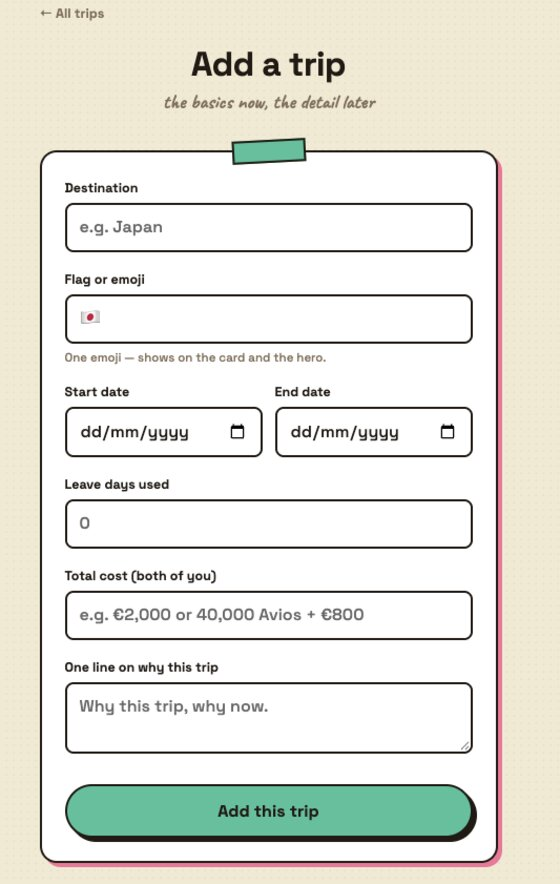
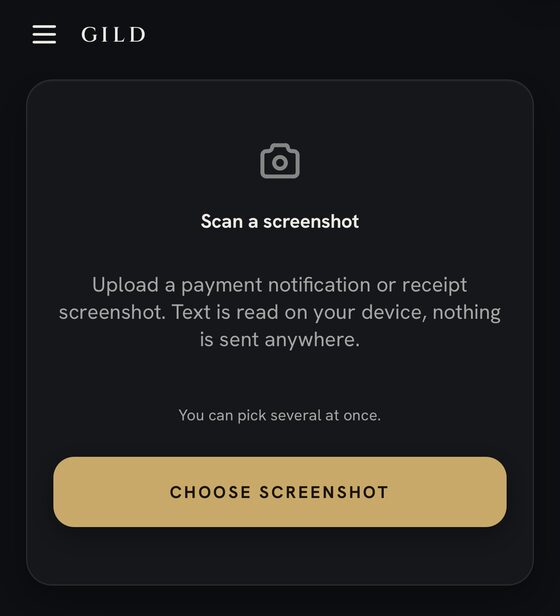

Felipe Reis
IT support engineer in Dublin. I work on a busy service desk and build the tools that make it less busy.
About
I'm a Service Desk Analyst III at a global sports betting and gaming company, supporting a workforce across the US, UK and Ireland. This past year I resolved around 1,400 tickets at a 98% resolution rate, and along the way I started automating the repetitive parts of the job with AI. That grew into a set of internal tools the desk now uses daily. I hold a BSc in Computing with Distinction, recently completed a UCD Professional Academy Diploma in Cybersecurity, and I'm fluent in English and Portuguese.
Work case studies
These are internal tools, so no links or screenshots; the diagrams use the same numbers described in the text.
New hire access provisioning tool
One request in, around 23 correctly typed tickets out. In production since July 2026.
Problem: every new hire needed around 23 correctly typed access tickets raised by hand, slow, error prone, and different every time depending on role.
Built: a tool that turns one new hire request into the complete batch. The routing rules came from reviewing roughly 1,600 historical tickets to establish what each role actually needs and who approves it.
Safety: read only test mode by default, multiple typed confirmations before anything writes to production, a live schema check against Jira before every run, and a crash resumable journal so an interrupted batch never creates duplicates.
Outcome: vetted with subject matter experts, signed off for production, usable by any tech on the desk.
Vendor status monitoring dashboard
Matched a paid service and caught outages it missed. Around $4,000 a year set to be saved.
Problem: the team paid for a third party service to watch vendor status pages, and nobody knew if it was actually good.
Built: a dashboard monitoring 72 vendor status pages with Slack alerts, suppression policies and alert history.
Proof: instead of switching on faith, I ran a multi week side by side trial against the paid tool with a daily automated comparison, and the review tracked what my dashboard missed just as carefully as what it caught, because knowing the limitations mattered more than proving it worked. It matched the paid tool's incident coverage and caught several outages it missed, including an 8 hour Tier 1 vendor incident.
Outcome: the subscription (around $4,000 a year) is set to be cancelled.
Service desk automation hub
The desk’s day in one app. Dozens of versioned releases, launched at a company offsite.
Problem: the desk's daily rhythm, morning triage, ticket quality checks, team metrics, lived in a dozen manual places.
Built: an internal web app that brings it together: a morning triage queue, ticket QA, and live dashboards with team resolution metrics. Dozens of versioned releases, code on GitHub behind protected branches with a build and verification pipeline.
Rollout: staged, with defined acceptance criteria, structured tester feedback and post rollout follow up, and a launch presented at a company offsite.
Knowledge base overhaul
Roughly 700 pages inventoried, 100+ reviewed by hand, standards being set.
Problem: a roughly 700 page service desk knowledge base with no ownership, no review cycle and years of drift.
Doing: co-driving a KCS aligned overhaul: full inventory, accuracy audit (I personally reviewed over 100 internal pages), a metadata template with named owners, and a proposed 90 day review cycle. I've also written 19 internal guides and runbooks myself.
Scheduled automation fleet
Around 14 checks that run whether anyone remembers them or not.
Problem: the small quality checks that keep a desk healthy, handover accuracy, customer replies landing after a ticket is resolved, missing priorities, only happen when someone remembers.
Built: around 14 scheduled automations that remember instead: a weekly handover quality check with reminders to the right people, a post resolution replies sweep, priority hygiene, a matcher that checks new tickets against 7,565 resolved ones to surface precedents, and more. Two of them were packaged and shared with the wider desk through a plugin catalogue set up with our Platform Engineering team.
Personal projects
Tripsy

A trip planning site my partner and I actually use. Each trip is its own page, and the home page computes leave-day totals and moves trips from upcoming to past automatically based on dates, no backend state to forget about.
The interesting part is the add-a-trip flow: a form posts to a small serverless function that commits a new page straight into the GitHub repo, which triggers auto-deploy. The function uses a fine-grained GitHub token scoped to one repo with contents-only permissions, held as a server-side environment variable so it never reaches the browser. Small project, but built the way I build things at work: least privilege, no secrets in the client, documented so someone else could run it.
The site holds our real travel dates, so the deployment is gated behind a shared password: a small Vercel middleware enforces HTTP Basic Auth on every path before anything is served. That's why there's no live link here.
GILD finance tracker live app ↗

A mobile-first budget and bill tracker built in React and wrapped with Capacitor into a real iOS app, delivered through a Codemagic pipeline to TestFlight. Dashboard, transactions, recurring bills, and a scan screen that turns a payment screenshot into a structured transaction to review before saving.
All storage lives behind one async module, so swapping localStorage for on-device SQLite later means rewriting the inside of one file and touching zero screens. The repo includes the product and design docs.
Everything else
The case studies above are the deep dives. This is the rest, one line each.
About
Away from the queue:
- Born the same year the PlayStation 2 came out, and grew up on it.
- Native Portuguese speaker, raised in Dublin.
- I plan trips with my partner thoroughly enough that I built an app for it.
- Formula 1 on Sundays, fantasy Premier League all season, a crossword most days.
Raise a ticket
Messages here open as an email in your own mail app. Nothing is stored on this site.